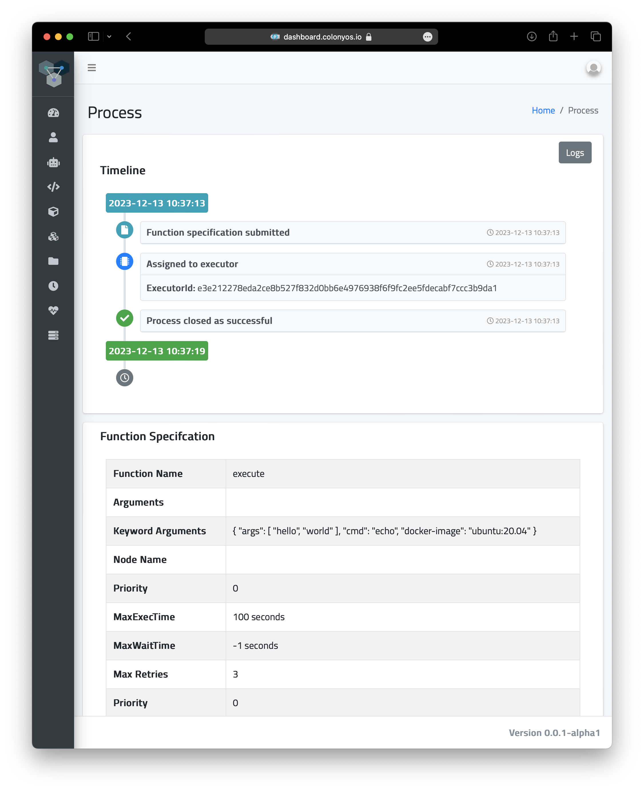

What is a container?
A container is a lightweight, standalone, executable package that includes everything needed to run a piece of software, such as the code, a runtime, binaries, libraries, environment variables, and config files. Numerous container technologies have been developed to meet different requirements.
Docker containers are extensively used in a variety of computing environments. Kubernetes a de facto standard container orchestration system, uses a container technology called Containerd as a low-level interface for container management. Containerd is also utilized internally by Docker. In High-Performance Computing (HPC) environments, Singularity containers are often preferred for their specific features that is designed to meet specific HPC needs. Generally, different container technologies offer distinct toolsets and APIs.
Colony OS offers a way to run containers in a unified way across platforms, independent of the underlying container technology, using a consistent API. This is achieved by submitting function specifications to a Colonies server, which then wraps the specifications into processes. A process is then assigned to a suitable executor, which subsequently launches a container on the underlying container platform where the executor is operating.
Within ColonyOS, there is a family of executors known as container executors. These implement a function called execute that spawns containers. As the format of the function specification is identical, it becomes possible to seamless switch between different platforms.
There are currently three types of container executors:
Kube executor spawns containers as Kubernetes batch jobs.
Docker executor spawns containers as Docker containers on a baremetal servers or VMs.
HPC executor spawns containers as Singularity containers on HPC systems, managing them as Slurm jobs.
We are now going to explore how we can launch containers on various platforms.
Execute containers
Follow instructions at Getting started and install the colonies and pollinator CLI tool.
In this tutorial, we assume that at least one container executor is available in the colony.
Let’s check which executors are currently available.
colonies executor ls
+----------------------+------------------------------+------------------------+
| NAME | TYPE | LOCATION |
+----------------------+------------------------------+------------------------+
| lumi | lumi-small-hpcexecutor | CSC, Finland |
| leonardo | leonardo-booster-hpcexecutor | Cineca, Italy |
| icekube | ice-kubeexecutor | ICE Datacenter, Sweden |
| garage-supercomputer | dev-hpcexecutor | Rutvik, Sweden |
+----------------------+------------------------------+------------------------+
A container executor takes a Unix command, a list of arguments, and a Docker image as input. It then launches a container that executes the specified command.
For example, to run the command echo "hello", "world" on an Ubuntu container we need to specify the following information:
"funcname": "execute",
"kwargs": {
"cmd": "echo",
"docker-image": "ubuntu:20.04"
"rebuild-image": false,
"args": [
"hello", "world"
]
}
To submit a function specification, we also need to specify requirements, so-called conditions, on the executors that will execute the function.
Additionally, we also need to define constraints on the execution, such as the expected execution time of the container.
This aspect is particularly important for managing failures effectively. If the maxexectime is exceeded, meaning the process takes
longer than anticipated, it will be unassigned and potentially reassigned to another executor.
The maxretries parameter determines the number of times a process can be reassigned.
The maxwaittime parameter specifies how long time process can wait in the queue before it is assigned and automatically failed.
This approach ensures execution continuity and that processes runs to completion, even in cases of
unexpected delays or failures.
A process can have the following states:
Waiting The process is submitted and enqueued at the Colonies server, waiting for an executor to be assigned and execute the process.
Running The process is assigned to an executor.
Successful The process has successfully been executed by an executor.
Failed The process has failed when executed by one or several executors.
Now, let’s execute the echo command specifed above.
{
"conditions": {
"executortype": "lumi-small-hpcexecutor",
"nodes": 1,
"processes-per-node": 1,
"mem": "1Gi",
"cpu": "500m",
"walltime": 200,
"gpu": {
"count": 0
}
},
"funcname": "execute",
"kwargs": {
"cmd": "echo",
"docker-image": "ubuntu:20.04",
"args": [
"hello", "world"
]
},
"maxwaittime": -1,
"maxexectime": 100,
"maxretries": 3
}
colonies function submit --spec echo.json --follow
The function will be execute by the lumi-small-hpcexecutor running on the LUMI supercomputer in Finland. If we change the executortype to
ice-kubeexecutor it would instead run on a Kubernetes cluster at the ICE Datacenter in Sweden.
INFO[0000] Process submitted ProcessId=50edc8ef92230aa984ed1cbc90c49c0834c3fad4766d6c88f3ceda24630cb0f8
INFO[0000] Printing logs from process ProcessId=50edc8ef92230aa984ed1cbc90c49c0834c3fad4766d6c88f3ceda24630cb0f8
hello world
INFO[0007] Process finished successfully ProcessId=50edc8ef92230aa984ed1cbc90c49c0834c3fad4766d6c88f3ceda24630cb0f8
We can also lookup the process by typing the following command:
colonies process get -p 50edc8ef92230aa984ed1cbc90c49c0834c3fad4766d6c88f3ceda24630cb0f8
Process:
+--------------------+------------------------------------------------------------------+
| ID | 50edc8ef92230aa984ed1cbc90c49c0834c3fad4766d6c88f3ceda24630cb0f8 |
| IsAssigned | True |
| InitiatorID | bcaeac1a507036f7fed0be9d38c43ba973be7c0064d1b0b010ede2f088093b3f |
| InitiatorName | johan |
| AssignedExecutorID | e3e212278eda2ce8b527f832d0bb6e4976938f6f9fc2ee5fdecabf7ccc3b9da1 |
| State | Successful |
| PriorityTime | 1702460233177327634 |
| SubmissionTime | 2023-12-13 10:37:13 |
| StartTime | 2023-12-13 10:37:13 |
| EndTime | 2023-12-13 10:37:19 |
| WaitDeadline | 0001-01-01 00:53:28 |
| ExecDeadline | 2023-12-13 10:38:53 |
| WaitingTime | 17.103ms |
| ProcessingTime | 6.336683s |
| Retries | 0 |
| Input | |
| Output | |
| Errors | |
+--------------------+------------------------------------------------------------------+
FunctionSpec:
+-------------+--------------------------------+
| Func | execute |
| Args | None |
| KwArgs | args:[hello world] cmd:echo |
| | docker-image:ubuntu:20... |
| MaxWaitTime | -1 |
| MaxExecTime | 100 |
| MaxRetries | 3 |
| Priority | 0 |
+-------------+--------------------------------+
Conditions:
+------------------+------------------------+
| ColonyName | hpc |
| ExecutorIDs | None |
| ExecutorType | lumi-small-hpcexecutor |
| Dependencies | |
| Nodes | 1 |
| CPU | 500m |
| Memmory | 1Gi |
| Processes | 0 |
| ProcessesPerNode | 1 |
| Storage | |
| Walltime | 200 |
| GPU | |
| GPUs | 0 |
| GPUMemory | |
+------------------+------------------------+
Attributes:
No attributes found
As ColonyOS stores process execution history in a database, we can also fetch the logs after process has finished.
colonies log get -p 50edc8ef92230aa984ed1cbc90c49c0834c3fad4766d6c88f3ceda24630cb0f8
hello world
Or we could look up the process in the ColonyOS dashboard:
Is can also be useful to get information about the execution history or list the queue. This is done using the colonies process command.
For example. the command below list the last 10 successful processes:
colonies process pss --count 10
+----------+------+-------------------------+---------------------+------------------------------+----------------+
| FUNCNAME | ARGS | KWARGS | END TIME | EXECUTOR TYPE | INITIATOR NAME |
+----------+------+-------------------------+---------------------+------------------------------+----------------+
| execute | | args:[30] cmd:sleep ... | 2023-12-13 10:51:47 | lumi-small-hpcexecutor | johan |
| execute | | args:[hello world] c... | 2023-12-13 10:37:13 | lumi-small-hpcexecutor | johan |
| execute | | args:[hello world] c... | 2023-12-13 10:37:09 | lumi-small-hpcexecutor | johan |
| execute | | args:[hello world] c... | 2023-12-13 10:24:50 | ice-kubeexecutor | johan |
| execute | | args:[hello world] ... | 2023-12-13 09:56:07 | ice-kubeexecutor | johan |
| execute | | docker-image:ubuntu:... | 2023-12-13 09:28:05 | ice-kubeexecutor | johan |
| execute | | docker-image:ubuntu:... | 2023-12-13 09:27:23 | ice-kubeexecutor | johan |
| execute | | args:[/cfs/fc752fe20... | 2023-12-12 22:29:26 | leonardo-booster-hpcexecutor | johan |
| execute | | cmd:python3 docker-i... | 2023-12-12 22:29:22 | leonardo-booster-hpcexecutor | johan |
| execute | | cmd:python3 docker-i... | 2023-12-12 22:29:25 | leonardo-booster-hpcexecutor | johan |
+----------+------+-------------------------+---------------------+------------------------------+----------------+
Alternativly, colonies process ps lists running processes, and colonies process psw lists waiting processes, and finally
colonies process psf lists failed processes.
Now that you may have acquired some fundamental knowledge about running containers on ColonyOS, let’s proceed to explore how to share data effectively across different container executors.
Init command
Managing data
Upload data
Let’s create a empty directory, and upload the directory to CFS.
mkdir myfiles
echo "Hello world" > myfiles/hello.txt
The command below uploads all files in the myfiles directory to CFS under the label myfiles.
colonies fs sync -l /myfiles -d ./myfiles
/myfiles:
=========
These files will be uploaded:
+-----------+-------+----------+
| FILE | SIZE | LABEL |
+-----------+-------+----------+
| hello.txt | 0 KiB | /myfiles |
+-----------+-------+----------+
No files will be downloaded
Are you sure you want to continue? (yes,no): yes
Uploading hello.txt 100% [===============] (46 kB/s)
Let’s list all labels on CFS.
colonies fs label ls
+---------------+-----------------+
| LABEL | NUMBER OF FILES |
+---------------+-----------------+
| /myfiles | 1 |
+---------------+-----------------+
To download the /myfiles label, for example on another computer:
colonies fs sync -l /myfiles -d ./myfiles2
We are now able to submit a function specification that synchronizes the /myfiles directory, ensuring the files becomes available on a shared file system accessible by the container executing the corresponding process.
The /myfiles label will be synchronized to /cfs/myfiles. This synchronization occurs twice: the first time before the container executes, and a second time after the container has completed its execution. This dual synchronization process enables the fetching of data needed by the container and pushing of data generated by the container.
{
"conditions": {
"executortype": "lumi-small-hpcexecutor",
"nodes": 1,
"processes-per-node": 1,
"mem": "1Gi",
"cpu": "500m",
"walltime": 200,
"gpu": {
"count": 0
}
},
"funcname": "execute",
"kwargs": {
"cmd": "cat",
"docker-image": "ubuntu:20.04",
"args": [
"/cfs/myfiles/hello.txt"
]
},
"fs": {
"mount": "/cfs",
"dirs": [
{
"label": "/myfiles",
"dir": "/myfiles",
"keepfiles": false,
"onconflicts": {
"onstart": {
"keeplocal": false
},
"onclose": {
"keeplocal": true
}
}
}
]
},
"maxwaittime": -1,
"maxexectime": 100,
"maxretries": 3
}
colonies function submit --spec ./myfiles.json --follow
INFO[0000] Process submitted ProcessId=b3a15b7822651cbbd34f7299d266f78de806505a0836a89033d513ade038ab13
INFO[0000] Printing logs from process ProcessId=b3a15b7822651cbbd34f7299d266f78de806505a0836a89033d513ade038ab13
Hello world
INFO[0003] Process finished successfully ProcessId=b3a15b7822651cbbd34f7299d266f78de806505a0836a89033d513ade038ab13